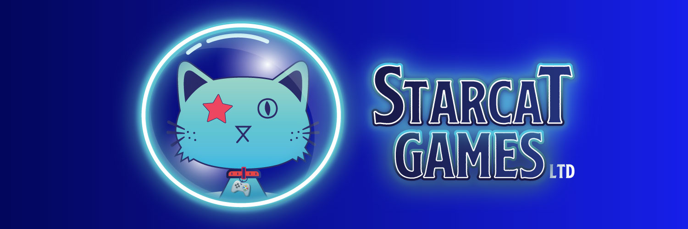

Journey Express is a hybrid 2D/3D adventure game currently available to wishlist on Steam! Inspired by games like Oregon Trail II, you'll need to manage resources, keep your party's health and morale up, and explore the environment around you to find food and other supplies.
## Current Projects
Some of the current projects that I'm working on are shown below!
## About
Starcat Games LTD is an independent game development studio based in the Midwestern United States.
